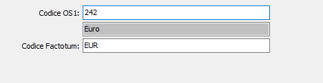

Divise
La tabella consente di associare i codici divisa presenti nella tabella Divise di OS1 a quelli presenti su Factotum Evolution di ItalStudio, in modo che la fase di esportazione dati sostituisca i valori di OS1 con quelli utilizzati sulla procedura Factotum e consentire il corretto collegamento delle procedure.
Per ogni codice divisa utilizzato su OS1 è necessario inserire il corrispondente codice utilizzato su factotum Evolution.
